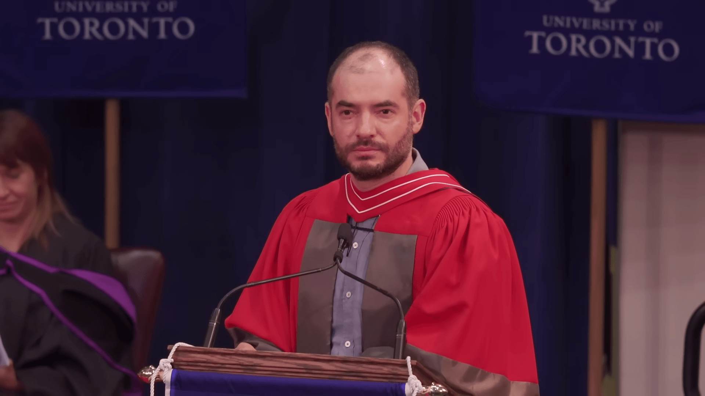

Key Messages About AI’s Future Ilya Sutskever FRS (Hebrew: איליה סוצקבר; born 8 December 1986) is an Israeli-Canadian computer scientist who specializes in machine learning.[6] He has made several major contributions to the field of deep learning.[7][8][9] With Alex Krizhevsky and Geoffrey Hinton, he co-invented AlexNet, a convolutional neural network.[10]